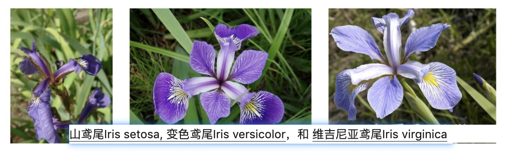
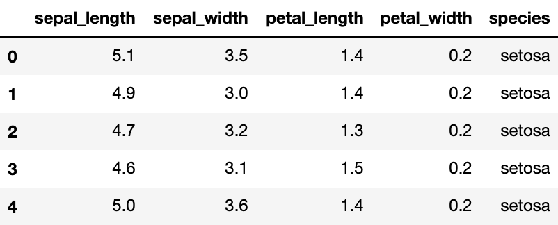
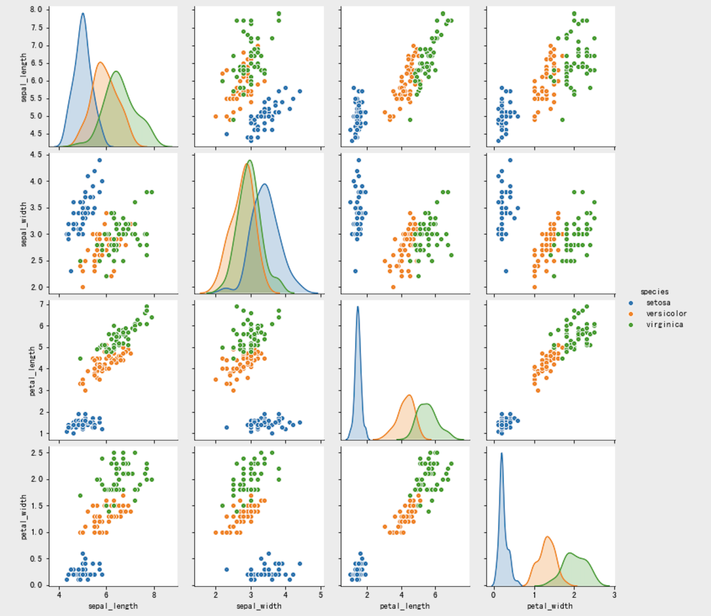
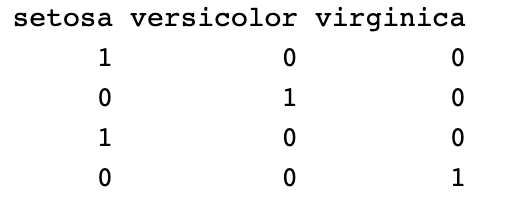
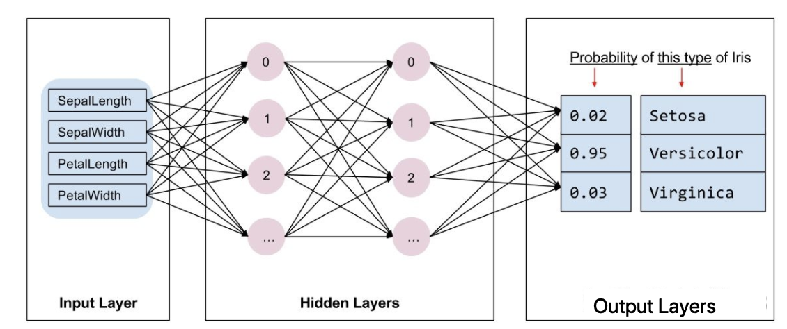

1.2 快速入门模型
学习目标
- 知道使用tf.keras的基本流程
- 了解tf.keras实现模型构建的方法
- 了解tf.keras中模型训练验证的相关方法

今天我们通过鸢尾花分类案例，来给大家介绍tf.keras的基本使用流程。tf.keras使用tensorflow中的高级接口，我们调用它即可完成：
- 导入和解析数据集
- 构建模型
- 使用样本数据训练该模型
- 评估模型的效果。
由于与scikiti -learn的相似性，接下来我们将通过将Keras与scikiti -learn进行比较，介绍tf.Keras的相关使用方法。
1.相关的库的导入
在这里使用sklearn和tf.keras完成鸢尾花分类，导入相关的工具包：
# 绘图
import seaborn as sns
# 数值计算
import numpy as np
# sklearn中的相关工具
# 划分训练集和测试集
from sklearn.model_selection import train_test_split
# 逻辑回归
from sklearn.linear_model import LogisticRegressionCV
# tf.keras中使用的相关工具
# 用于模型搭建
from tensorflow.keras.models import Sequential
# 构建模型的层和激活方法
from tensorflow.keras.layers import Dense, Activation
# 数据处理的辅助工具
from tensorflow.keras import utils
2.数据展示和划分
利用seborn导入相关的数据，iris数据以dataFrame的方式在seaborn进行存储，我们读取后并进行展示：
# 读取数据
iris = sns.load_dataset("iris")
# 展示数据的前五行
iris.head()

另外，利用seaborn中pairplot函数探索数据特征间的关系：
# 将数据之间的关系进行可视化
sns.pairplot(iris, hue='species')

将数据划分为训练集和测试集：从iris dataframe中提取原始数据，将花瓣和萼片数据保存在数组X中，标签保存在相应的数组y中：
# 花瓣和花萼的数据
X = iris.values[:, :4]
# 标签值
y = iris.values[:, 4]
利用train_test_split完成数据集划分：
# 将数据集划分为训练集和测试集
train_X, test_X, train_y, test_y = train_test_split(X, y, train_size=0.5, test_size=0.5, random_state=0)
接下来，我们就可以使用sklearn和tf.keras来完成预测
3.sklearn实现
利用逻辑回归的分类器，并使用交叉验证的方法来选择最优的超参数，实例化LogisticRegressionCV分类器，并使用fit方法进行训练：
# 实例化分类器
lr = LogisticRegressionCV()
# 训练
lr.fit(train_X, train_y)
利用训练好的分类器进行预测，并计算准确率：
# 计算准确率并进行打印
print("Accuracy = {:.2f}".format(lr.score(test_X, test_y)))
逻辑回归的准确率为：
Accuracy = 0.93
4.tf.keras实现
在sklearn中我们只要实例化分类器并利用fit方法进行训练，最后衡量它的性能就可以了，那在tf.keras中与在sklearn非常相似，不同的是：
- 构建分类器时需要进行模型搭建
- 数据采集时，sklearn可以接收字符串型的标签，如：“setosa”，但是在tf.keras中需要对标签值进行热编码，如下所示：

有很多方法可以实现热编码，比如pandas中的get_dummies(),在这里我们使用tf.keras中的方法进行热编码：
# 进行热编码
def one_hot_encode_object_array(arr):
# 去重获取全部的类别
uniques, ids = np.unique(arr, return_inverse=True)
# 返回热编码的结果
return utils.to_categorical(ids, len(uniques))
4.1 数据处理
接下来对标签值进行热编码：
# 训练集热编码
train_y_ohe = one_hot_encode_object_array(train_y)
# 测试集热编码
test_y_ohe = one_hot_encode_object_array(test_y)
4.2 模型搭建
在sklearn中，模型都是现成的。tf.Keras是一个神经网络库,我们需要根据数据和标签值构建神经网络。神经网络可以发现特征与标签之间的复杂关系。神经网络是一个高度结构化的图，其中包含一个或多个隐藏层。每个隐藏层都包含一个或多个神经元。神经网络有多种类别，该程序使用的是密集型神经网络，也称为全连接神经网络：一个层中的神经元将从上一层中的每个神经元获取输入连接。例如，图 2 显示了一个密集型神经网络，其中包含 1 个输入层、2 个隐藏层以及 1 个输出层，如下图所示：

上图 中的模型经过训练并馈送未标记的样本时，它会产生 3 个预测结果：相应鸢尾花属于指定品种的可能性。对于该示例，输出预测结果的总和是 1.0。该预测结果分解如下：山鸢尾为 0.02，变色鸢尾为 0.95，维吉尼亚鸢尾为 0.03。这意味着该模型预测某个无标签鸢尾花样本是变色鸢尾的概率为 95％。
TensorFlow tf.keras API 是创建模型和层的首选方式。通过该 API，您可以轻松地构建模型并进行实验，而将所有部分连接在一起的复杂工作则由 Keras 处理。
tf.keras.Sequential 模型是层的线性堆叠。该模型的构造函数会采用一系列层实例；在本示例中，采用的是 2 个密集层（分别包含 10 个节点）以及 1 个输出层（包含 3 个代表标签预测的节点）。第一个层的 input_shape 参数对应该数据集中的特征数量：
# 利用sequential方式构建模型
model = Sequential([
# 隐藏层1，激活函数是relu,输入大小有input_shape指定
Dense(10, activation="relu", input_shape=(4,)),
# 隐藏层2，激活函数是relu
Dense(10, activation="relu"),
# 输出层
Dense(3,activation="softmax")
])
通过model.summary可以查看模型的架构：
Model: "sequential"
_________________________________________________________________
Layer (type) Output Shape Param #
=================================================================
dense (Dense) (None, 10) 50
_________________________________________________________________
dense_1 (Dense) (None, 10) 110
_________________________________________________________________
dense_2 (Dense) (None, 3) 33
=================================================================
Total params: 193
Trainable params: 193
Non-trainable params: 0
_________________________________________________________________
激活函数可决定层中每个节点的输出形状。这些非线性关系很重要，如果没有它们，模型将等同于单个层。激活函数有很多，但隐藏层通常使用 ReLU。
隐藏层和神经元的理想数量取决于问题和数据集。与机器学习的多个方面一样，选择最佳的神经网络形状需要一定的知识水平和实验基础。一般来说，增加隐藏层和神经元的数量通常会产生更强大的模型，而这需要更多数据才能有效地进行训练。
4.3 模型训练和预测
在训练和评估阶段，我们都需要计算模型的损失。这样可以衡量模型的预测结果与预期标签有多大偏差，也就是说，模型的效果有多差。我们希望尽可能减小或优化这个值，所以我们设置优化策略和损失函数，以及模型精度的计算方法：
# 设置模型的相关参数：优化器，损失函数和评价指标
model.compile(optimizer='adam', loss='categorical_crossentropy', metrics=["accuracy"])
接下来与在sklearn中相同，分别调用fit和predict方法进行预测即可。
# 模型训练：epochs,训练样本送入到网络中的次数，batch_size:每次训练的送入到网络中的样本个数
model.fit(train_X, train_y_ohe, epochs=10, batch_size=1, verbose=1);
上述代码完成的是：
- 迭代每个epoch。通过一次数据集即为一个epoch。
- 在一个epoch中，遍历训练 Dataset 中的每个样本，并获取样本的特征 (x) 和标签 (y)。
- 根据样本的特征进行预测，并比较预测结果和标签。衡量预测结果的不准确性，并使用所得的值计算模型的损失和梯度。
- 使用 optimizer 更新模型的变量。
- 对每个epoch重复执行以上步骤，直到模型训练完成。
训练过程展示如下：
Epoch 1/10
75/75 [==============================] - 0s 616us/step - loss: 0.0585 - accuracy: 0.9733
Epoch 2/10
75/75 [==============================] - 0s 535us/step - loss: 0.0541 - accuracy: 0.9867
Epoch 3/10
75/75 [==============================] - 0s 545us/step - loss: 0.0650 - accuracy: 0.9733
Epoch 4/10
75/75 [==============================] - 0s 542us/step - loss: 0.0865 - accuracy: 0.9733
Epoch 5/10
75/75 [==============================] - 0s 510us/step - loss: 0.0607 - accuracy: 0.9733
Epoch 6/10
75/75 [==============================] - 0s 659us/step - loss: 0.0735 - accuracy: 0.9733
Epoch 7/10
75/75 [==============================] - 0s 497us/step - loss: 0.0691 - accuracy: 0.9600
Epoch 8/10
75/75 [==============================] - 0s 497us/step - loss: 0.0724 - accuracy: 0.9733
Epoch 9/10
75/75 [==============================] - 0s 493us/step - loss: 0.0645 - accuracy: 0.9600
Epoch 10/10
75/75 [==============================] - 0s 482us/step - loss: 0.0660 - accuracy: 0.9867
与sklearn中不同，对训练好的模型进行评估时，与sklearn.score方法对应的是tf.keras.evaluate()方法，返回的是损失函数和在compile模型时要求的指标:
# 计算模型的损失和准确率
loss, accuracy = model.evaluate(test_X, test_y_ohe, verbose=1)
print("Accuracy = {:.2f}".format(accuracy))
分类器的准确率为：
3/3 [==============================] - 0s 591us/step - loss: 0.1031 - accuracy: 0.9733
Accuracy = 0.97
到此我们对tf.kears的使用有了一个基本的认知，在接下来的课程中会给大家解释神经网络以及在计算机视觉中的常用的CNN的使用。
总结
1.使用tf.keras进行分类时的主要流程：
数据处理-构建模型-模型训练-模型验证
2.tf.keras中构建模型可通过squential()来实现并利用.fit()方法进行训练
3.使用evaluate()方法计算损失函数和准确率